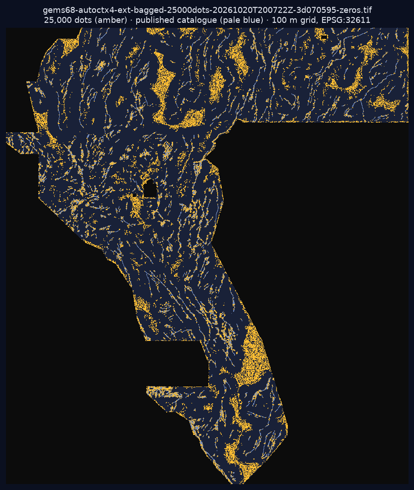

← root executive summary (PR #11 candidate)
Exp 4 (seed 42) candidate — parallel session, PR #12
Two gated candidates exist (IR-68-PARALLEL-01). The root page promotes the PR #11 file
(
gems68-ac3-v6strat28-38000dots). This page's file passed its own pre-registered fresh-seed gate.
Only a selector step may choose which single file gets a submission slot.The file
⬇ gems68-autoctx4-ext-bagged-25000dots-20261020T200722Z-3d070595-zeros.tif ZIP NaN-outside twin
| Submission name | gems68-autoctx4-ext-bagged-25000dots-20261020T200722Z-3d070595-zeros |
|---|---|
| Note (≤140 chars) | GEMSDOE68 autoctx4 ext+bagged s3; 25000 dots >2px off cat; HOLDOUT-DTI 0.1219 vs s1 0.0711 seed42; UNSCORED (107 chars) |
| SHA-256 | 99e00aa5f7137306271f12227dea5da476f8d2943a84fcfffe8dc4b94b43335c |
| Format | float32 · single band · EPSG:32611 · 3730×3292 · 100 m · values exactly {0,1} · all-finite primary (no cell outside [0,1]) |
| HOLDOUT-DTI (gems57-pooled-hide-v2, 11,348 withheld, fresh seed 42) | stage 3 @25,000 0.1219 vs stage 1 0.0711 (Δ +0.0509, 95% CI [+0.0377,+0.0640]); far >1 km 0.0871 vs 0.0623 (Δ +0.0249, CI [+0.0147,+0.0354]) |
| Uniqueness (69 priors at build time) | max Spearman 0.106 · max 3-px dot overlap 61.0% · 54.0% vs the PR #11 38k candidate (post-merge recheck) · no byte duplicate |
| Organizer score | none — UNSCORED |
Run card: evidence/run_card_exp4_seed42.json · evidence: evidence/exp4_autocontext_ext_bagged.json ·
pre-registration: evidence/exp4_preregistration.json · Exp 3 (seed 31, 38k) logged negative.
